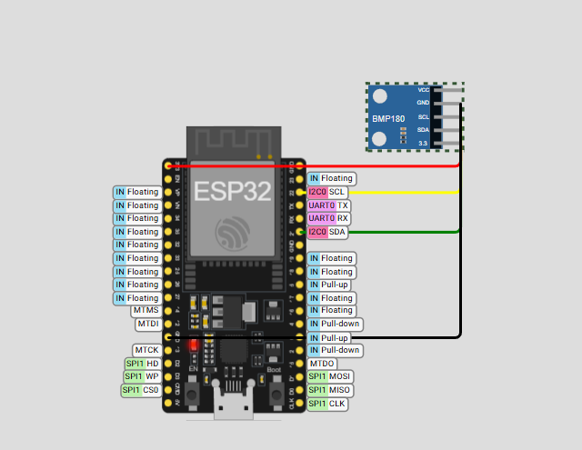
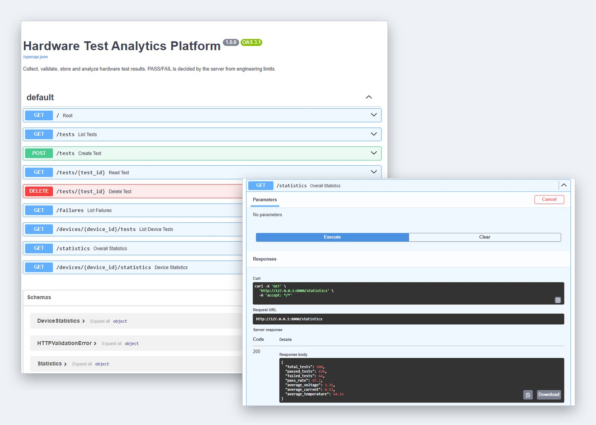
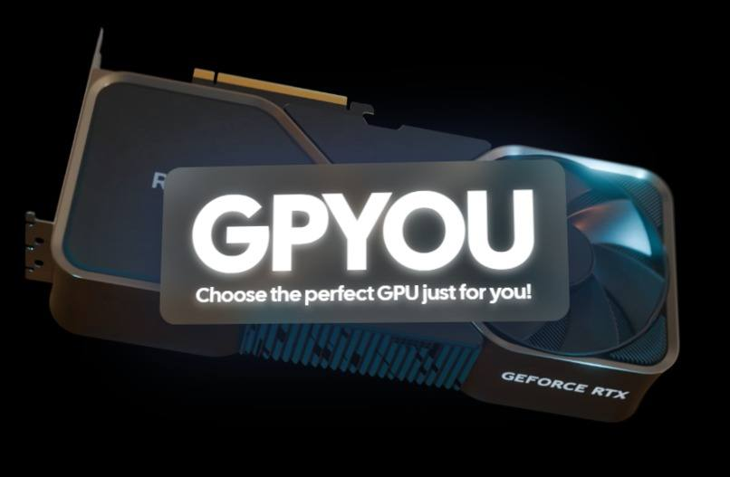
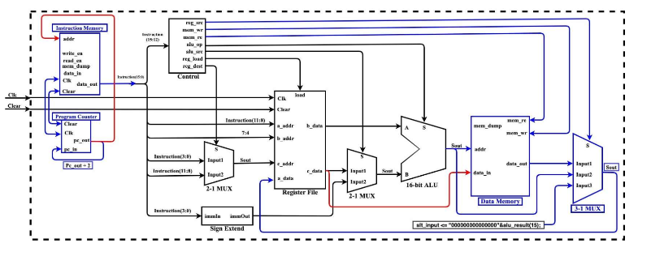
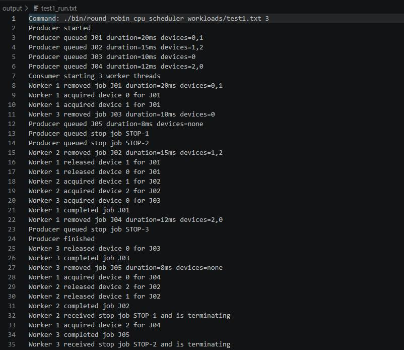
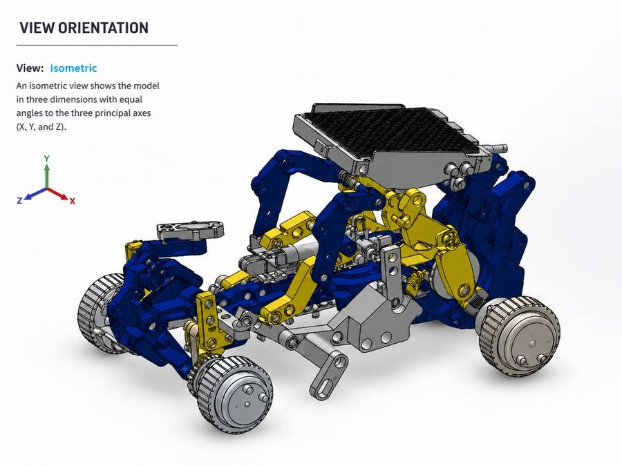
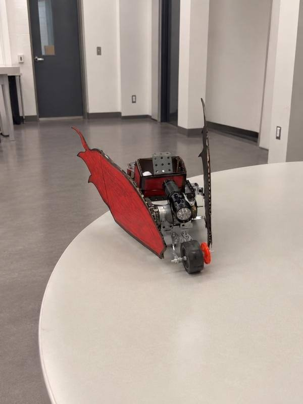

About
Computer Engineering Co-op student at the University of Guelph, working at the hardware/software boundary: FPGA design, embedded systems, computer architecture, and low-level programming.
Skills
Featured projects

ESP32 Wireless Sensor Node
FreeRTOS firmware that streams I2C sensor readings to a REST API over Wi-Fi, with sampling and networking on separate cores, delivering 50 of 51 readings (98%) in simulation.

Hardware Test Analytics Platform
A FastAPI and SQLite backend that stores simulated hardware test results, decides PASS/FAIL from engineering limits, and reports failures and per-device pass rates, backed by 68 automated tests.

GPYOU: AI GPU Recommendation Platform
Built in 48 hours with a 5-person team that matched users to GPUs with the Gemini API and won Best UI among 50 competing projects.
All projects
A mix of hardware, software, and mechanical work. Each one links out to more detail: GitHub where the repo is public, and a deep dive with the full story either way.
ESP32 Wireless Sensor Node
FreeRTOS firmware for an ESP32 that reads a sensor over I2C and sends each reading to a REST API over Wi-Fi, with sampling and networking split across two cores so slow uploads never delay a reading. Delivered 50 of 51 readings (98%) in a simulated run.
Hardware Test Analytics Platform
A REST API for collecting hardware test measurements, evaluating them against engineering limits, and analyzing pass rates and failures per device, with automated tests, CI, and Docker.

VHDL CPU & UART Interface
A 16-bit CPU built from scratch in VHDL, extended with a UART interface so a host program can independently verify its register state.

Round Robin CPU Scheduler
A multithreaded Round Robin scheduler in C that models process states and preemption under a configurable time quantum.

Reverse Engineering Rover Assembly
Reverse-engineered a rover assembly in SOLIDWORKS, rebuilding 15+ mechanical components from measurement and inspection.
GPYOU: AI GPU Recommendation Platform
A GPU recommendation platform built in 48 hours with a 5-person team that won Best UI among 50 competing projects.
University Student Management System
A JavaFX desktop app simulating a university management system, with separate user and administrator workflows.

Sensor-Guided Electromechanical Mobility Prototype
A three-wheeled mobility platform with a mechanical launcher, built with a 5-person team and tuned through a full center-of-mass and life-cycle analysis.
Experience
Tim Hortons
- Collaborate in teams of 10–12 employees to prioritize tasks and resolve operational issues in a high-volume environment.
- Support customer service, order preparation, cash handling, inventory, and sanitation across multiple workstations.
ASW Works
- Supported crews of up to 4 across 3–5 residential renovation projects, adapting installations to changing site requirements.
- Performed precision measurement, framing, drywall, flooring, and material preparation using 10+ hand and power tools.
Students for Herd Immunity
- Ran community health workshops as part of a student-led public health initiative.
Education
University of Guelph
Certified SOLIDWORKS Associate (CSWA)
Contact
Best reached by email. Happy to talk about co-op opportunities, or any of the projects above.